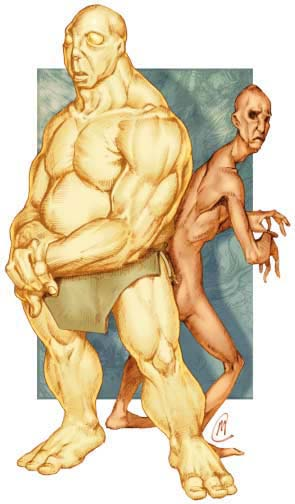

有人说宇宙是由对立的力量、元素和理念组成的：善与恶、光明与黑暗、炎热与寒冷。据说，这些力量和概念之间的相互作用定义了一切。
黎曼衡者会很快不同意这种论点。
他们认为，在这些原力和概念之间存在一个中庸之道――中立、难以捉摸且舒适。黎曼衡者认为这些现象和概念是存在本质的核心，而善与恶等对立力量之间的冲突威胁着这种存在。
黎曼衡者的存在是为了保护这种中庸之道，纠正任何可能损害或摧毁它的失衡。当邪恶或善良的力量威胁到压倒一个世界时，黎曼衡者会介入纠正。
黎曼衡者说他们自己的语言，通用语和地底通用语。
黎曼衡者宁愿不参与任何类型的冲突，直到冲突的后果能够确定。如果帮助或阻碍一方可以保持权力平衡和中庸之道的存在，那么黎曼衡者会迅速采取行动或提出建议。
黎曼衡者使用他们的变形能力来伪装自己，同时确定周围人的阵营和动机。如果检测到失衡，黎曼衡者通常会以某种已经参与的生物的伪装介入冲突。
异界生物特性（Outsider Traits）：黎曼衡者具有黑暗视觉（60 英尺范围），并且无法被复生或复活（尽管祈愿术或奇迹术可以恢复生命）。
黎曼衡者特性（Rilmani Traits）：黎曼衡者对电和毒免疫，并且具有 20 的酸和音波抗力。
改变外形 (Change Shape, Su)：黎曼衡者可以变成任何小型或中型类人生物的形态。
类法术能力（Spell-Like Abilities）：随意――通晓语言、侦测混乱、侦测邪恶、侦测善良、侦测守序、侦测魔法、侦测思想、羽落术、圣域术、巧言术。施法者等级 17（黄金衡者）、12（紫铜衡者）、9（黑铁衡者）；豁免 DC 18 + 法术等级（黄金衡者）、16 + 法术等级（紫铜衡者）、15 + 法术等级（黑铁衡者）。
此外，所有黎曼衡者都具有其种类独有的类法术能力（见下文）。
召唤黎曼衡者（Summon Rilmani）（Sp）：黎曼衡者可以召唤其他黎曼衡者，就像施放召唤怪物法术一样，但成功程度各不相同。掷 d% 并将结果与黎曼衡者特定描述中给出的骰子范围进行比较（如果召唤不是自动的）：如果失败，没有黎曼衡者会响应召唤。被召唤的生物会在 1 小时后自动返回原处。被召唤的黎曼衡者 1 小时内不能使用自己的召唤能力。
大型异界生物（跨位面）

| 生命骰： | 16d8+112（184 hp） |
| 先攻： | +4 |
| 速度： | 50 英尺 |
| 防御等级： | 36（-1 体型，+1 敏捷，+12 +4全身甲，+14 天生），接触 10，措手不及 35 |
| 基本攻击／擒抱： | +16/+26 |
| 攻击： | 超大 +3 戟 +25 近战 |
| 全力攻击： | 超大 +3 戟 +25/+20/+15/+10 近战 |
| 伤害： | 超大 +3 戟 2d6+12 加阵营驳斥 |
| 面宽／触及： | 10 英尺/10 英尺 |
| 特殊攻击： | 阵营驳斥，类法术能力，召唤黎曼衡者 |
| 特殊能力： | 伤害减免 30/+3（译注：3r升级为15/善良或邪恶或守序或混乱），快速医疗 5，异界生物特性，黎曼衡者特性，法术抗力30，召唤盔甲，召唤武器 |
| 豁免： | 强韧 +17、反射 +14、意志 +17，能力：力量 23、敏捷 19、体质 24、智力 23、感知 24、魅力 26 |
| 技能： | 专注 +26、手艺或知识（任意七项）+25、交涉 +29、聆听 +26、搜索 +25、察言观色 +26、法术辨识 +26、侦察 +26、生存 +7（+9 追随踪迹） |
| 专长： | 顺势斩、大顺势斩、寓守于攻（译注：Expertise，3r升级为COMBAT EXPERTISE）、精通绊摔、猛力攻击、武器专攻（戟） |
| 地域： | 任何陆地或地下（外域） |
| 组织： | 单独或使节（2-4） |
| 挑战等级： | 17 |
| 宝物： | 无钱币，双倍货物，标准物品 |
| 阵营： | 总是中立 |
| 进化： | 17-32 HD（大型）； 33�C48 HD（超大型） |
| 等级调整： | +9 |
（译注：3e给中体型生物用适合双手用的戟写作大型，伤害为1d10，大型生物使用双手用的戟写作超大型，同时1d10提升一个体型是变为2d6。所以如果升级为3r，其应为 大型+3戟，伤害2d8+12）
黄金衡者是最强大的黎曼衡者，也是该种族的实际领导者。一些紫铜衡者和黑铁衡者对这条规则感到不满，因为黄金衡者有时会将较弱小的黎曼衡者用作其更大计划中的可牺牲棋子，而他们阻止思想阅读的能力挫败了较弱小的黎曼衡者预测其最终目的的手段。
当黄金衡者以自然形态出现时，它们看起来像是肌肉发达、皮肤金黄、大小与食人魔相当的人形生物。与那些邪恶的生物不同，黄金衡者没有毛发，皮肤光滑。他们完美的美貌和平静的存在让大多数生物感到安心。
黄金衡者是黎曼衡者的外交官和战略家。当他们亲自参与平衡事务时，意味着他们可以使用的所有秘密手段都失败了。他们似乎在手无寸铁，毫无防备的情况下出现，公开欢迎人们谈论手头的问题，并解决找到中庸之道的方法。如果这种策略失败，黄金衡者的盔甲和武器就会在一道耀眼的闪光中显现，而黄金衡者会用暴力来实现言语无法实现的目标。
除了黎曼衡者语、通用语和地底通用语外，黄金衡者还会说深渊语、天体语、龙语、地狱语和木族语。
黄金衡者很少主动发起战斗，因为它更喜欢将身体对抗作为最后的手段。当它进入近战时，它是一个强大的敌人，能够用它的戟的每一次致命挥动造成巨大的伤害。黄金衡者经常飞到敌人上方并试图摔绊，并且它会一直使用其阵营驳斥能力和全力攻击，直到明确敌人不会松懈。
阵营驳斥（Antithesis）（Su）：任何被黄金衡者的近战攻击击中或用天生武器或徒手攻击触碰它的生物都会受到某种伤害，具体取决于其阵营与中立的差异。混乱生物受到 2d6 点守序伤害。守序生物受到 2d6 点混乱伤害。邪恶生物受到 2d6 点神圣伤害。善良生物受到 2d6 点亵渎伤害。因此，混乱善良阵营的生物每次被黄金卿击中都会受到额外的 4d6 点伤害（2d6 守序，2d6 邪恶）。黄金衡者可以以自由动作抑制或恢复使用此能力。
类法术能力（Spell-Like Abilities）：随意――魅惑怪物、寒冰锥、高等解除魔法（译注：原文为greater dispelling，3r升级后更名为Dispel Magic, Greater）、反混乱法阵、反邪恶法阵、反善良法阵、反秩序法阵、魔法飞弹、群体暗示术、高等传送术（仅限自身外加最大负重的物品）（译注：原文为teleport without error，3r升级后更名为Teleport, Greater）； 3/天――驱逐术、飞行术、禁制术、医疗术、心灵屏障、虹光喷射、真知术。
施法者等级 17；豁免 DC 18 + 法术等级。
召唤黎曼衡者（Summon Rilmani）（Sp）：每天一次，黄金衡者可以自动召唤 2d4 个黑铁衡者或 1d2 个紫铜衡者（由黄金衡者选择）。
快速医疗 （Fast Healing）（Ex）：只要黄金衡者至少有 1 点生命值，它就会以每轮 5 点的速度恢复失去的生命值。快速医疗不会恢复因饥饿、口渴或窒息而失去的生命值，也不会让黄金衡者重新长出或重新连接失去的身体部位。
召唤盔甲（Summon Armor）（Su）：黄金衡者不穿盔甲，但当受到任何攻击威胁时，一套半透明的金色 +4 全身甲会及时出现在其身上，帮助其抵御攻击，然后立即消失。这种护甲的出现无法被阻止，但可以在反魔法场中抑制它。
护甲不会影响黄金衡者的速度、负重或技能检定。
召唤武器（Summon Weapon）（Su）：黄金衡者可以通过魔法召唤一把金色的 +3 超大型戟，瞬间武装自己。当与黄金衡者分离时，武器就会消失。黄金衡者可以以自由动作召唤或驱散自己的武器。
中型异界生物(跨位面)
| 生命骰： | 12d8+60 (114 hp) |
| 先攻： | +7 |
| 速度： | 40 英尺, 攀爬 20 英尺 |
| 防御等级： | 32 (+7 敏捷, +15 天生), 接触 17, 措手不及 32 |
| 基本攻击／擒抱： | +12/+16 |
| 攻击： | +2 细剑 +21 近战, 或 +1 追击长弓 +20 远程 |
| 全力攻击： | +2细剑+21/+16/+11 近战, 或 +1 追击长弓 +20/+15/+10 远程 |
| 伤害： | +2细剑1d6+8, +1 追击长弓 1d8+1 （译注：3e细剑可以双手1.5倍力量，如果升级成3r，伤害应为1d6+6） |
| 面宽／触及： | 5 英尺/5 英尺 |
| 特殊攻击： | 偷袭 +3d6, 类法术能力, 召唤黎曼衡者, 迅猛攻击 |
| 特殊能力： | 伤害减免 20/+2（译注：3r升级为10/善良或邪恶或守序或混乱）, 视线躲藏, 异界生物特性, 黎曼衡者特性, 法术抗力 25, 召唤黎曼衡者, 陷阱感知, 直觉闪避 |
| 豁免： | 强韧 +13, 反射 +15, 意志 +12 |
| 属性： | 力量 19, 敏捷 24, 体质 20, 智力 18, 感知 19, 魅力 23 |
| 技能： | 平衡 +12, 唬骗 +21, 攀爬 +22, 专注 +14, 交涉 +20, 易容 +16 (+18 扮演他人), 脱逃术 +14, 伪造文书 +14, 收集信息 +16, 躲藏 +16, 威吓 +18, 跳跃 +14, 聆听 +14, 潜行 +16, 搜索 +14, 察言观色 +14, 侦查 +14, 生存 +4 (+6 追随踪迹)，翻滚 +16 |
| 专长： | 闪避、近程射击、精准射击、快速射击、武器娴熟 |
| 地域： | 任何陆地或地底(外域) |
| 组织： | 单独或小队(2-8) |
| 挑战等级： | 12 |
| 宝物： | 无钱币，双倍货物，标准物品 |
| 阵营： | 总是中立 |
| 进化： | 13-24 HD (中型); 25-36 HD (大型) |
| 等级调整： | +5 |
紫铜衡者是黎曼衡者的间谍和刺客。当某种失衡可以通过"移除"某个特定个体或小群体来纠正时,紫铜衡者就会被派遣去解决。
紫铜衡者像黄金衡者一样没有毛发，其自然形态看起来像一个拥有铜色皮肤的轻盈而有些憔悴的人，但很少有生物能看到这种形态。紫铜衡者很少不穿戴层层伪装就旅行。
紫铜衡者擅长编织谎言与欺诈, 就像即兴创作伟大音乐的吟游诗人一样。他们自信而有魅力,利用自己的技能渗透敌人的阵营并冒充敌人。拥有足以引起失衡力量的个体有时会震惊地发现，他们最信任的知己或珍爱的人在黎曼衡者接到攻击命令的几年前就被紫铜衡者取代了。
除了黎曼衡者语、通用语和地底通用语,紫铜衡者还会说深渊语、天界语和炼狱语。
根据任务的性质和紧迫程度,紫铜衡者会采取不同的战术。大多数紫铜衡者偏好简单的"搜索和摧毁"任务,利用魔法找到目标并靠近,然后发射致命的箭雨。有时他们会利用自己的技能渗透到一个组织或个人的生活中,然后用谎言引诱黎曼衡者的对手进入危险的境地,消灭他们。
紫铜衡者可以通过召唤怪物IX(summon monster IX)法术召唤。
偷袭（Sneak Attack）（Ex）：只要紫铜衡者的目标丧失敏捷加值,或被紫铜衡者夹击,紫铜衡者在成功的近战攻击中就会造成额外3d6点伤害。
类法术能力（Spell-Like Abilities）：随意―侦测思想、敲击术、生物定位术、马友夫强酸箭、误导术、识破隐形； 每日3次―任意门、弱能术、假象术、毒击术。
施法等级12级；DC 16 + 法术环位
召唤黎曼衡者（Summon Rilmani）（Sp）：紫铜衡者每天可以召唤1d3名黑铁衡者,成功率为75%(1d100结果为26-100)。
迅猛攻击 （Swift Strikes）（Ex）：紫铜衡者可以用一个标准动作进行全力攻击,在第一次攻击命中之前立即全部发射箭矢,或在敌人来得及反应之前用刺剑连续猛攻。这一能力使得紫铜衡者在突袭或先发制人的情况下异常有效,因为它可以现身并释放全力攻击,每一击都能造成偷袭伤害。
使用迅猛攻击后,紫铜衡者会陷入疲乏状态1d4轮,在此期间无法再次使用该能力。
视线躲藏（Hide in Plain Sight）（Su）：只要紫铜衡者在10英尺范围内有任何阴影它就可以在开阔地带隐藏自己而无需任何遮蔽。但它无法隐藏在自己的影子中。
陷阱感知（Trap Sense）（Ex）：紫铜衡者在躲避陷阱的反射豁免上有+2加值，对抗陷阱的攻击时AC有+2加值。
直觉闪避（Uncanny Dodge）（Ex）：紫铜衡者在措手不及时或被不可见的攻击者攻击时依然保留AC上的敏捷加值，而且除非遭遇16级以上的游荡者，否则不会被夹击。
（明明效果是高等直觉闪避，名字却叫做直觉闪避）
技能：紫铜衡者在攀爬检定中有+8种族加值, 并且总是可以在攀爬检定中总是取10，即使很匆忙或受到威胁时也一样。
中型异界生物（跨位面）
| 生命骰： | 8d8+72（108 hp） |
| 先攻： | +1 |
| 速度： | 20 英尺（+1 全身甲）；基础 30 英尺。 |
| 防御等级： | 30（+1 敏捷，+7 天生，+9 +1 全身甲，+3 +1 大钢盾）接触 11，措手不及 29 |
| 基本攻击／擒抱： | +8/+15 |
| 攻击： | +1 长枪 +16 近战（译注：原文为heavy lance），或 +1 战斧 +16 近战 |
| 全力攻击： | +1 长枪 +16/+11 近战，或 +1 战斧 +16/+11 近战 |
| 伤害： | +1 长枪 1d8+8，+1 战斧 1d8+8 |
| 面宽／触及： | 5 英尺/5 英尺。 |
| 特殊攻击： | 恐惧灵光，类法术能力，召唤黎曼衡者 |
| 特殊能力： | 伤害减免 10/+1（译注：3r升级为10/善良或邪恶或守序或混乱），异界生物特性，黎曼衡者特性，法术抗力20 |
| 豁免： | 强韧 +15，反射 +7，意志 +7 |
| 属性： | 力量 24，敏捷 13，体质28，智力 15，感知 13，魅力 20 |
| 技能： | 攀爬 +16（+18 绳子参与）、专注 +16、交涉 +7、逃脱术 +1（+3 绳索）、威吓 +20、聆听 +16、专业（士兵）+16、骑术 +16、搜索 +17、察言观色 +17、侦察 +16、生存 +1（+3 追随踪迹）、绳技 +16 |
| 专长： | 骑乘战斗、快速骑乘攻击、奋力冲刺 |
| 地域： | 任何陆地或地下（外域） |
| 组织： | 单独或小队（2-8） |
| 挑战等级： | 9 |
| 宝物： | 无钱币，双倍货物，标准物品 |
| 阵营： | 总是中立 |
| 进化： | 9-16 HD（中型）； 17-24 HD（大型） |
| 等级调整： | +5 |
黑铁衡者是黎曼衡者的无数爪牙。他们作为步兵参与永无止境的战斗，以保护中立、平衡和生物不选择某一方的权利。
黑铁衡者看起来像由铁制成的肌肉发达的男人。他们穿着与皮肤颜色相似的厚重全身甲，手持盾牌和致命长枪。几乎从未遇到过步行的黑铁衡者。他们骑着一匹库尔杜拉斯或由魔法召唤的魅影驹。他们骑着这些可怕的生物冲进战场，让敌人感到恐惧。
黑铁衡者出现在大型战场上，有时伪装成已经参与冲突的参与者。出于对战斗结果的兴趣，黑铁衡者被黄金衡者派往那里，黑铁衡者组成自己的方阵，确保战争以黎曼衡者希望的方式结束，或者按照黄金衡者的意愿持续下去。
除了黎曼衡者语、通用语和地底通用语外，黑铁衡者还会说木族语。
虽然黑铁衡者是黎曼衡者中最尚武和最具攻击性的，但他们更希望生物服从他们的命令并遵守黎曼衡者的理想，而不是与他们战斗。黑铁衡者经常试图恐吓和吓跑敌人，然后才诉诸暴力。即便如此，黑铁衡者也具备使用武力执行黄金衡者命令的良好装备。
黑铁衡者可以通过召唤怪物 VII (summon monster VII)法术召唤。
恐惧灵光（Fear Aura）（Su）：黑铁衡者可以以自由动作产生恐惧效果。此能力的作用类似于恐惧术（施法者等级 10；豁免 DC 19），但它会影响黑铁衡者周围 15 英尺半径内的所有生物。任何成功通过豁免检定以对抗此效果的生物在一天内不会再次受到该黑铁衡者恐惧灵光的影响。所有黎曼衡者和黑铁衡者选择的任何生物都对其恐惧灵光免疫。
类法术能力（Spell-Like Abilities）：随意 - 朦胧术、命令术、隐雾术、识破隐形、沉默术； 3/天 - 治疗中度伤、解除魔法、冰风暴、魅影驹。
施法者等级 9；豁免 DC 15 + 法术等级。
召唤黎曼衡者（Summon Rilmani）（Sp）：每天一次，黑铁衡者可以召唤 1d2 个黑铁衡者，成功率为 35%（d% 的结果为 66-100）。